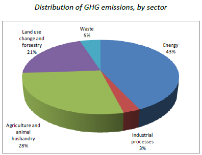

ARGENTINE REPUBLIC
INTENDED NATIONALLY DETERMINED CONTRIBUTION (INDC)
(NON-OFFICIAL TRANSLATION)
According to Decisions 1/CP.19 and 1/CP.20, and taking into account the principles, provisions and structure of the United Nations Framework Convention on Climate Change (UNFCCC), the Argentine Republic is pleased to submit its Intended Nationally Determined Contribution (INDC).
Introduction
The impact that the planet suffers today requires taking immediate measures which imply large economic effort. Thus, countries that have not yet reached full development are those that suffer most from this phenomenon, despite not being the principal responsible. In this sense, climate change increases inequalities that already exist among different nations, creating a new barrier for the development of countries.
Resolving this problem requires the initiation of concrete action in the areas of adaptation, mitigation, as well as the provision of the means of implementation; however, for this to be possible, there must exist a reference framework agreed by all the countries of the world. For the purpose of reaching an agreement among countries that are so different, it is important, in the first place, to understand the differences that separate them, not only in their historical process but also in their current and future goals. This leads to the need to avoid increasing inequalities. Thus, the respect and full application of the principle of common but differentiated responsibilities is fundamental for the success of the process.
In this sense, it is necessary to consider that measures taken to combat climate change, including unilateral ones, should not constitute a means of arbitrary or unjustifiable discrimination or a disguised restriction on international trade.
Climate change can be reverted if all countries in the world can articulate human and economic effort, without precedent in human history that can only be achieved if there exists a sincere political decision of all the world’s governments.
National Circumstances
The Argentine Republic is located in the Southern and Western hemisphere. Its territory extends both in the American continent as in Antarctica, including the South Orkney Islands, other southern islands, and the Malvinas Islands.
Argentina is composed of 23 provinces and the Autonomous City of Buenos Aires, and includes the Malvinas Islands, the South Georgia Islands, the South Sandwich Islands, as well as the surrounding maritime space, which are an integral part of Argentina’s national territory. The islands are illegally occupied by the United Kingdom of Great Britain and Northern Ireland and are the object of a sovereignty dispute between the two countries, recognized by the United Nations General Assembly, the United Nations Decolonization Committee, and other international organizations.
With a total of 40,117,096 inhabitants, about 90% of the country’s population lives in urban areas. Buenos Aires province has the largest percentage of the population (39% of the total), followed by the provinces of Córdoba, Santa Fe and the Autonomous City of Buenos Aires. Some 31.92% of the population is concentrated in Buenos Aires Metropolitan Area, which comprises the Autonomous City of Buenos Aires and 26 municipal jurisdictions of Buenos Aires Province, in an area that is 0.50% of the national total.
Argentina has a very significant biodiversity resulting from the vast territory with a large range of latitudes and altitudes with different geomorphologic, climatic and edaphological characteristics, resulting from the presence of 18 eco-regions (15 continental, 2 marine y 1 in Antarctica).
Since 2003 Argentina has adopted an economic model which has allowed the virtuous articulation of economic growth and social inclusion. With the State active in the promotion of economic development, in supporting and creating jobs, and in income distribution, the majority of social indicators have evolved positively. In this sense, some of the achievements include: the creation of over 6 million jobs, the reduction of unemployment from 20.4% in 2003 to 6.6% 2015; increase in GDP dedicated to national social investment from 7.2% in 2004 to 13.9% in 2014; increase in GDP dedicated to retirement pensions from 3.4% in 2004 to 6.7% in 2014; increase in the rate of retirement pension coverage to above 96% of all retirement-age people; the creating of 16 new National Universities; a 33% increase the number of university students between 2001 and 2014; and a reduction in the Gini coefficient from 0.534 in 2003 to 0.410 in 2015.
Vulnerability and impact of climate change
The geographic position of the country and its socioeconomic characteristics lead to a territory that is vulnerable to climate change and climate variability, a situation which has become evident in recent years as a consequence of repeated and growing extreme climate events, as well as in gradual changes that affected various regions of the country.
Studies undertaken by Argentine researchers show that in the period 1960-2010 there was an increase in the average temperature in most of Argentina, of about 0.5 °C, exceeding 1 °C in some parts of Patagonia; there was also an increase in the number of days with heat waves and a decrease in the number of frost days. Large increases in precipitation were observed in the East of the country causing floods with large socio-economic impact. There was a reduction in precipitation in semi-arid zones, specifically in the Andean region and a reduction in the stream flows of rivers in the Cuyo region.
With respect to the potential impact of climate change for the rest of the XXI Century, it is worth noting that an increase in average temperature of 0.5 to 1 °C is projected for almost all of the country by the middle of the current century; this implies an acceleration of warming compared to the last 50 years. With respect to average precipitation, the changes in the next decades are not important, although an increase in the frequency of intense precipitation events are projected.
The vulnerability to climate change is important considering that agriculture and animal husbandry occupy an important place in the country’s economy. This fact becomes even more relevant considering that Argentina is a major global player in food production and supply, playing a fundamental role in global food security.
Greenhouse gas (GHG) emissions profile
In analyzing the country’s GHG emissions profile, one should consider the following:
- The high energy consumption related to transport in a country which has a large territory;
- The sustained increase in energy consumption in the residential sector is a consequence of a general policy of social inclusion, one of whose aspects is to guarantee universal access to energy under equitable conditions, as a determining element in the quality of life of its inhabitants;
- The sustained increase in energy consumption in productive sectors as an undeniable strategic input for economic development and job creation;
- Food production to satisfy the growing world demand, contributing to guarantee global food security.
According to the results of Argentina’s Third National Communication on Climate Change, GHG emissions are estimated to be of the order of 429 M ton CO2-eq for the last national inventory of greenhouse gas emissions. The emissions distribution in the different sectors is shown below:

Adaptation and mitigation efforts realized
Argentina has participated actively in the process of generation and development of the international climate regime, specifically with respect to the United Nations Framework Convention on Climate Change (UNFCCC) and the Kyoto Protocol. Moreover, Buenos Aires City hosted two Conferences of the Parties: COP 4 in 1998 and COP 10 in 2004.
Since then, the country has implemented voluntary national actions in mitigation and adaptation in different sectors. Nevertheless, with the objective of facing the challenge of climate change in the most efficient and articulated manner, Argentina designed the “National Strategy on Climate Change” and, within this institutional framework, a coordinating entity, “Governmental Committee on Climate Change” was created, for the participation of national and provincial state representatives.
In the energy sector two central policy objectives were defined: the diversification of the energy matrix and the promotion of rational and efficient use of energy. In this sense, the country has a regulatory structure with strategic long-term plans that promote, among other measures, a larger participation of non-conventional renewable sources, hydroelectricity, nuclear power, and the replacement of fossil fuels by biofuels. Moreover, a set of programs and actions intended to reduce energy consumption intensity has been established.
In the transport sector, the optimization of rail transport system is conceived in a search for sustainability linked to climate change mitigation actions. In this sense, Law No. 27,132 constitutes an important regulatory framework that declares railways to be of national public interest and a priority objective for Argentina, comprising the reactivation of passenger and cargo railways, the renewal and improvement rail infrastructure and incorporation of technologies and services that contribute to the modernization and efficiency of the rail public transport system.
In the sector of agriculture, forestry and other land use (AFOLU), among other measures, Law No. 26,331 for the Environmental Protection of Native Forests established minimum budgets for environmental protection for the enrichment, restoration, conservation, harvesting and sustainable management of native forests, and for the environmental services that these provide to society. This institutional framework permitted the provinces to develop the process of land management of existing native forests according to sustainability criteria and establishing different conservation categories as a function of the environmental value of different native forest units and the environmental services they provide. Within this framework, the National Fund for the Enrichment and Conservation of Native Forests was created as a means to implement mechanisms for compensating the private sector with the objective of enriching, conserving, restoring, and promoting the sustainable management of these forests.
A variety of initiatives have been adopted in the same sector to allow an increase in food production, reducing environmental impact, including the development of varieties that allow a decrease in the use of pesticides, resistance to water stress, introduction of changes in sowing dates, and the development of irrigation systems to compensate for periods of water shortage, the introduction of land cover practices as well as early warning systems.
Moreover, no-till agriculture, combined with adequate fertilization and crop rotation proved central to the strategy to face climate change, through measures that have allowed soil moisture retention and improved soil structure and fertility. Other measures incorporated to the practices are precision agriculture, development of biomass energy, promotion of organic agriculture, as well as the planting and sustainable management of forest plantations.
With the objective of reducing the risks from the impact of climate change, Argentina analyzed climate model runs in order to project changes in its territory over the next 100 years. In the same sense, complex tools such as “Hydraulic Infrastructure Trust”, “National Glacier Inventory”, as well as the aforementioned ”National Fund for the Enrichment and Conservation of Native Forests”, and “National Biodiversity Strategy”, among others, were established. Spaces for interinstitutional articulation to promote reduced disaster risks, such as the “National Platform for the Reduction of Disaster Risks” and the “Risk Management Study Commission” were also created.
Finally, given that social vulnerability is a determining risk factor for climate change impact, policies for improving people’s living conditions, undertaken within a framework of growth with social inclusion, would strengthen their capacity for adaptation.
Process for the preparation of the national contribution
The national contribution presented here is the result of a technical and political process initiated within the framework of the Governmental Committee and the National Strategy on Climate Change. An essential input to the process were the studies prepared within the framework of the Third National Communication which included an updated national GHG inventory, the identification of national mitigation potential, the development of climate change scenarios, the identification of the impact and vulnerability to climate change, and adaptation measures to face them.
Both the Third National Communication as well as the National Contribution are the result of a participative process, which included the vision, opinions, and proposals of public, private, and scientific and technical sectors, and civil society organizations, through numerous meetings, workshops and surveys.
The consultative process with different actors permitted the analysis of mitigation and adaptation measures identified in the Third National Communication and thereby, to determine the mitigation potential, as well as adaptation measures.
Fair and Ambitious
The national contribution is fair and ambitious, it is based on a process that took years, and that has implied the development of knowledge, institutional framework and specific measures. The priority of the Argentine Republic is to continue in the path of development with social inclusion that would allow improved well-being for all sectors of the population, especially those most vulnerable. The contribution was determined through the identification of mitigation and adaptation measures that are linked to this objective. Moreover, Argentina’s current share of global emissions and its contribution to global food security have been considered.
Argentina has identified a mitigation potential that would allow it to contribute to combating climate change. A part of this potential can be achieved with great economic and social effort from all Argentines, but in order to reach the full potential, means of implementation should be available.
| Unconditional Goal |
Argentina’s goal is to reduce GHG emissions by 15% in 2030 with respect to projected BAU emissions for that year. The goal includes, inter alia, actions linked to: the promotion of sustainable forest management, energy efficiency, biofuels, nuclear power, renewable energy, and transport modal shift. The criteria for selecting the actions include the potential for reducing /capturing GHG emissions and associate co-benefits, as well as the possibility of applying nationally developed technologies. |
| Conditional Goal |
Argentina could increase its reduction goal under the following conditions:
a) Adequate and predictable international financing; b) support for transfer, innovation and technology development; c) support for capacity building.
In this case, a reduction of 30% GHG emissions could be achieved by 2030 compared to projected BAU emissions in the same year. The goal contemplates both the increase of the scope of measures in progress, as well as the implementation of new measures. In most cases, the costs and benefits of the measures have been analyzed. The criteria for selecting the actions include the potential for reducing /capturing GHG emissions and associate co-benefits, as well as the possibility of applying nationally development technologies. |
 |
| Type of goal |
Percentage reduction in absolute emissions with respect to a “Business as usual” (BAU) trend scenario. |
| Goal Period |
2030 |
| Baseline |
The baseline “Business as usual” (BAU) scenario was built from a projection of economic growth in the absence of climate change mitigation policies. The projection starts in year 2005 with GHG emissions of 670 M ton CO2-eq in year 2030. |
| Scope and Coverage |
|
| Sectors |
The entire national territory is considered, including the following sectors: Energy; Agriculture; Waste; Industrial Processes; Land use change and forestry. |
| GHG |
The contribution contemplates six greenhouse gases: Carbon dioxide (СО2); Methane (СН4); Nitrous oxide (N2O); Hydrofluorocarbons (HFC); Perfluorocarbons (PFC); and Sulfur Hexafluoride (SF6). |
| Methodology |
Inventories according to IPCC (1996) Guidelines. Global Warming Potential (GWP) values according to the IPCC Second Assessment Report (SAR). |
| Adaptación Needs |
Argentina considers that adaptation to climate change is its principal priority, taking into account that the adverse effects of this phenomenon are already suffered in the national territory. In this context, it has implemented, with its own resources, a set of actions in this area. Nevertheless, and depending on the support received in the form of international finance, technology development and transfer and capacity building, it could extend and deepen its adaptation actions, inter alia, in the following areas:
- The intensification and increase in early warning systems for intense rains, floods, heat waves, and systems for response to and recovery from climate disasters;
- The enrichment, conservation, restoration, improvement, and sustainable management of native forests;
- The increase in irrigated crop area and improvement in water resource management;
- The improvement in decision making on crop management;
- The reduction in vulnerability and strengthening of processes in health management related to the direct and indirect impact of climate change;
- The implementation of structural and non structural measures to face extreme events; and
- The promotion of biodiversity conservation and Adaptation based on Ecosystems.
In most of these cases, the measures have been identified with cost/benefit analyses undertaken. |
Disclaimer
Nothing in this contribution can be interpreted as Argentina is making commitments that are not included in the objective, principles and provisions of the United Nations Framework Convention on Climate Change, especially with regard to food security and the principle of common but differentiated responsibilities.
Depending on the outcome of negotiations on climate change aimed to adopt a new agreement at COP 21, Argentina reserves the right to make revisions to this intended nationally determined contribution.